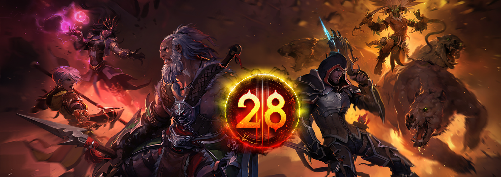
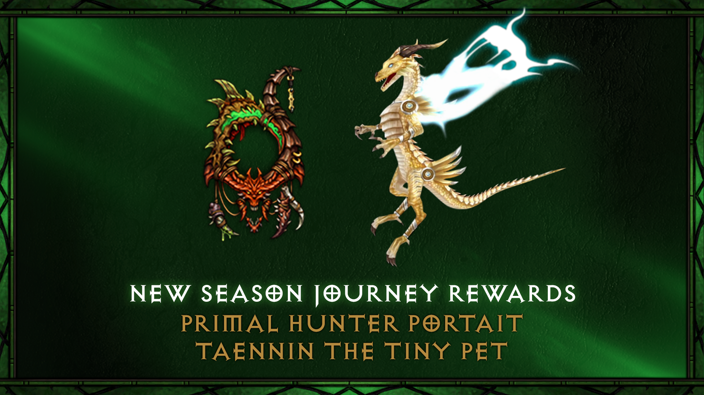
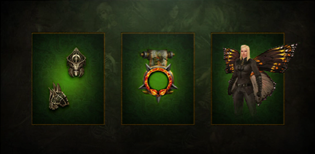

Temporada 28: Rites of Sanctuary
INÍCIO
Os Conjuntos de Classe disponíveis para completar certos capítulos na Jornada da Temporada, cortesia do Presente de Haedrig, mudaram mais uma vez. Listamos os conjuntos disponíveis abaixo. Para quem é novo na Seasons, veja como funciona:
Concluir os Capítulos 2, 3 e 4 da Jornada da Temporada irá recompensá-lo com três Presentes de Haedrig. Cada Presente contém algumas peças de um dos seus Conjuntos de Classe. Os jogadores só podem desbloquear um conjunto de classe dessa maneira por temporada entre Hardcore e Non-Hardcore, então escolha com sabedoria!
O conjunto que você receberá depende da Classe do personagem que você está jogando ao abrir cada Presente de Haedrig. Para coletar um conjunto de classe completo, você precisará abrir todos os três no mesmo personagem.
Sets da Temporada e link para o Maxroll

Builds
https://maxroll.gg/d3/category/guides
Conquista sazonal
- Complete uma fenda Nephalem no Suplício X em 2 minutos.
- Três Gemas Lendárias no nível 65.
- Mate os chefes no Suplício X dentro de 20 minutos após o início do jogo.
- Mate 350 ou mais monstros em um evento baú amaldiçoado na dificuldade Torment X.
- Alcançar a Fenda Maior de nível 55 jogando solo com os bônus de seis partes de algumas builds.
Atualização de builds
- Demon Hunter: SpikeTraps
- Demon Hunter: TerrasdoPavor
- Demon Hunter: EssênciaProfana
- Monge: AtributosPrincipais
- Monge: Preceitos/Miltempestades
- Feiticeiro: Salva de Espíritos
- Arcanista: Hidras
- Necromancer: CarnavalArdente
Altar dos Sacrifícios

- Para a Temporada 28, Ritos de Santuário, vamos mergulhar nas profundezas das misteriosas ruínas da Mata Infecta. Em meio a uma expedição de mineração, cidadãos de Nova Tristram encontraram um Altar sinistro esculpido em um material arcaico e marcado com símbolos misteriosos. Profundamente abalados pelo cheiro sobrenatural do monólito, eles recrutaram a ajuda de bravos nefalem dispostos a investigar essa sinistra descoberta, até então esquecida: o Altar dos Ritos.
- Link para montar seus bônus https://caleko.github.io/s28planner
Build recomendada (1-12): https://caleko.github.io/s28planner/index.html
Recompesas da Temporada
Moldura e Mascote
Wings of Terror

OBS: Desbloquear os 26 selos

NOTA: Recompensa da temporada 16